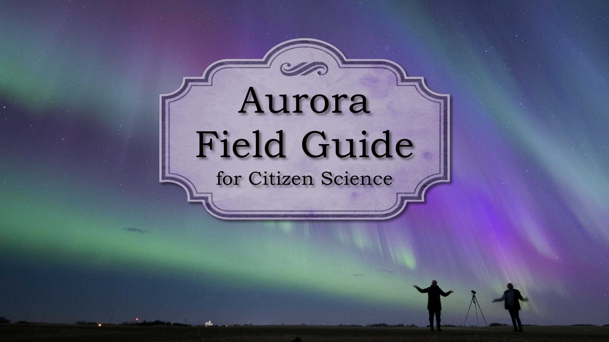
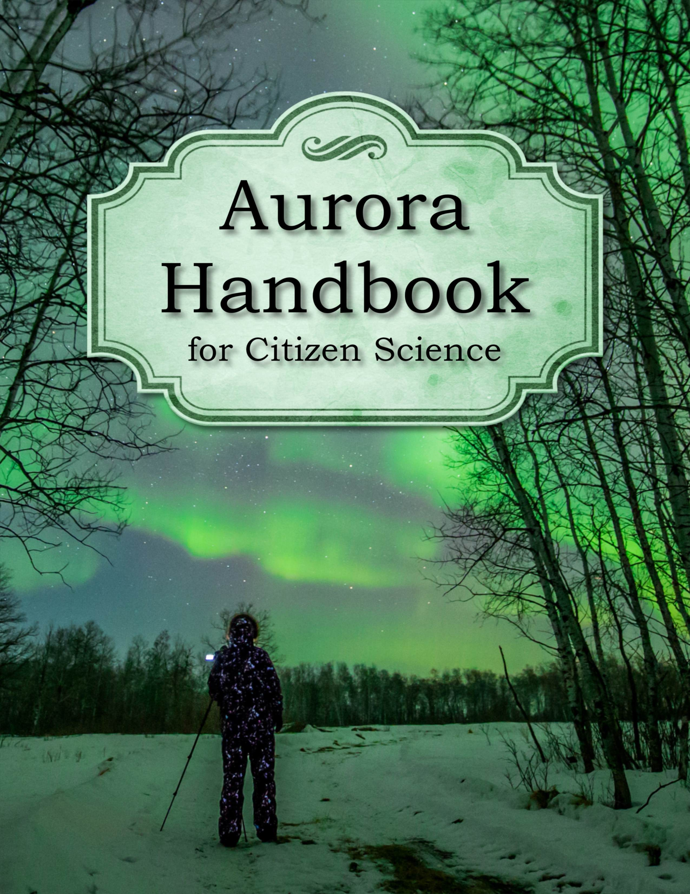

Hello and Welcome!
We are a team of scientists and citizen scientists, all united by a shared passion for the aurora! Together, in the Auroral Research Coordination: Towards Internationalised Citizen Science (ARCTICS) group, we’ve combined our expertise to create two valuable resources for the aurora community.
Our Aurora Field Guide provides examples of various types of auroras, helping you recognize and identify different forms in your own photographs. Meanwhile, our Aurora Handbook delves deeper into aurora chasing, capturing images for scientific research, and contributing to our collective understanding. We explain the process of taking and submitting your photos, how collaborations between professional scientists and citizen scientists unfold, and highlight key discoveries that have emerged through this teamwork.
These guides are available to you free of charge, and we hope that you enjoy them! Happy aurora hunting from the ARCTICS team!
To cite the work, we ask that you use the above doi.
Both guides are licensed under a Creative Commons Attribution-NonCommercial 4.0 International License (CC BY-NC 4.0).
Aurora Field Guide for Citizen Science
Click Here for the Aurora Field Guide
Aurora Handbook for Citizen Science
Contents:
- Introduction??????????
- Some examples to get started
- How to create Sections and Subsections
- How to include Figures
- How to add Tables
- How to add Comments and Track Changes
- How to add Lists
- How to write Mathematics
- How to change the margins and paper size
- How to change the document language and spell check settings
- How to add Citations and a References List
- Good luck!